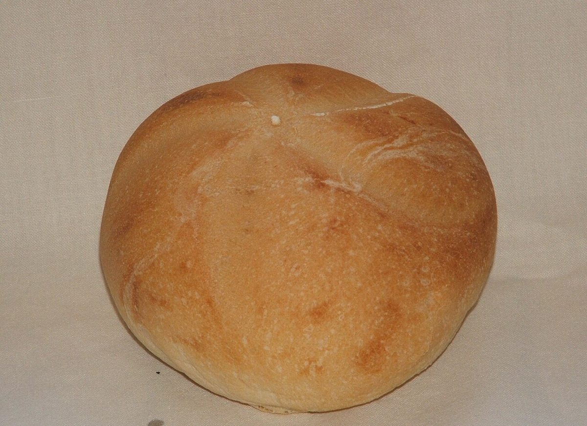
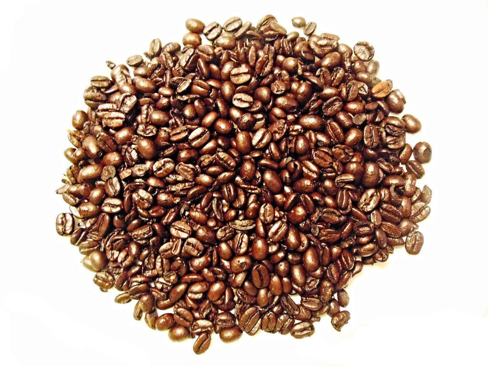

手づくりパンの店
手づくりパンの店maru
店名の「maru」から、制作側が「円」を連想してつくった試作サイトです。お店の情報は確認できたものだけを載せ、そのほかは「準備中」としています。

直径1の丸を転がすと五つの数字、五つのページ
直径1の円を1回転させると、およそ3.14進みます。円周率の最初の5桁 3・1・4・1・5 を、ページの順番に1桁ずつ割り当てました。丸い窓の数字をたどってどうぞ。
まあるいもの写真はイメージです
ここに並ぶ写真は、フリー素材のイメージです。お店のパンや豆ではありません。実際の商品写真は、お店からご提供いただいたものに差し替えます。


お店の情報わかっていること
| 店名 | 手づくりパンの店 maru |
|---|---|
| 所在地 | 〒569-0855 大阪府高槻市牧田町7-55-102 |
| 電話 | 072-648-3663 |
| @maru.pan.takatsuki | |
| 営業時間 | 準備中 |
| 定休日 | 準備中 |
| 駐車場 | 準備中 |
| ご予約 | 準備中 |
「準備中」の項目は、確認でき次第こちらに掲載します。